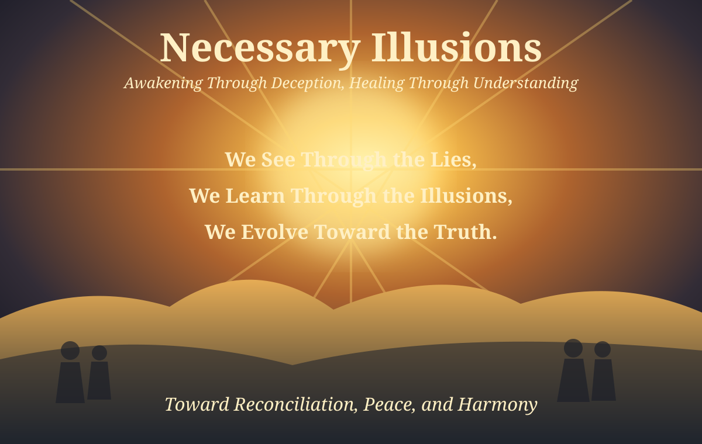

The Necessary Illusion
Article #053 · November 11, 2026
Awakening Through Deception, Healing Through Understanding

The lies and deceptions we witness more and more are not signs of humanity’s corruption, nor proof of some irreversible moral decline. They are, paradoxically, a necessary aspect of the human journey — a stage in our collective evolution that ultimately leads us toward reconciliation, peace, and harmony.
For most of history, humanity has navigated the world through stories — some true, some distorted, some intentionally crafted to protect fragile systems or fragile minds. These stories, even when false, served a purpose: they allowed societies to function, identities to form, and individuals to survive within structures they did not yet have the maturity to question.
But as consciousness rises, the old stories begin to crack.
The deceptions become more visible, more exaggerated, more absurd — not because evil is increasing, but because awareness is. What once went unnoticed now stands in plain sight. What once felt normal now feels impossible to justify. The lies are not growing darker; the human mind is growing brighter.
This is why the moment feels so intense.
We are witnessing the final stretch of an old paradigm trying to sustain itself through increasingly fragile illusions. And yet, this unraveling is not a catastrophe — it is a revelation.
Humanity cannot reconcile what it cannot see.
It cannot heal what it cannot acknowledge.
It cannot transform what it refuses to confront.
The deceptions, then, become catalysts. They push people to ask questions they never dared to ask. They force societies to examine assumptions long taken for granted. They create the discomfort necessary for awakening. Without friction, there is no growth. Without contrast, there is no clarity.
And as more people begin to see through the illusions, something remarkable happens: compassion emerges. Not the shallow compassion of pity, but the deep compassion born from understanding that every lie, every distortion, every manipulation was part of a developmental stage — a collective childhood.
Humanity is not falling apart; it is growing up.
The lies were never the destination. They were the scaffolding. And once the structure of consciousness becomes strong enough, the scaffolding is no longer needed. It collapses — not to destroy, but to reveal what has been built underneath.
What comes after is not chaos, but coherence.
Not conflict, but clarity.
Not division, but unity.
Reconciliation becomes possible because the truth is finally visible. Peace becomes attainable because fear loses its grip. Harmony becomes natural because humanity begins to operate from awareness rather than survival.
In this sense, the deceptions of our age are not the end of the story — they are the turning point. They are the necessary illusions that prepare us for the necessary truth.
And once the truth arrives, it does not punish.
It liberates.